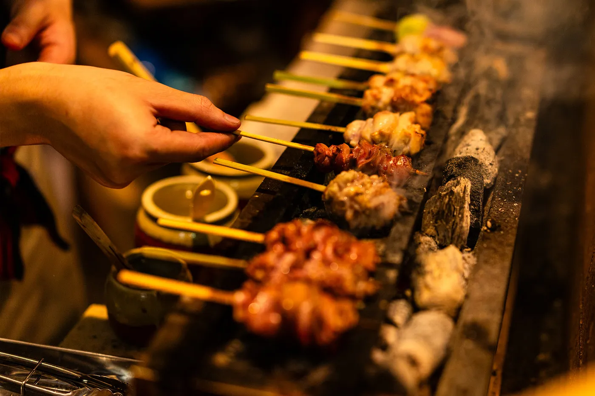
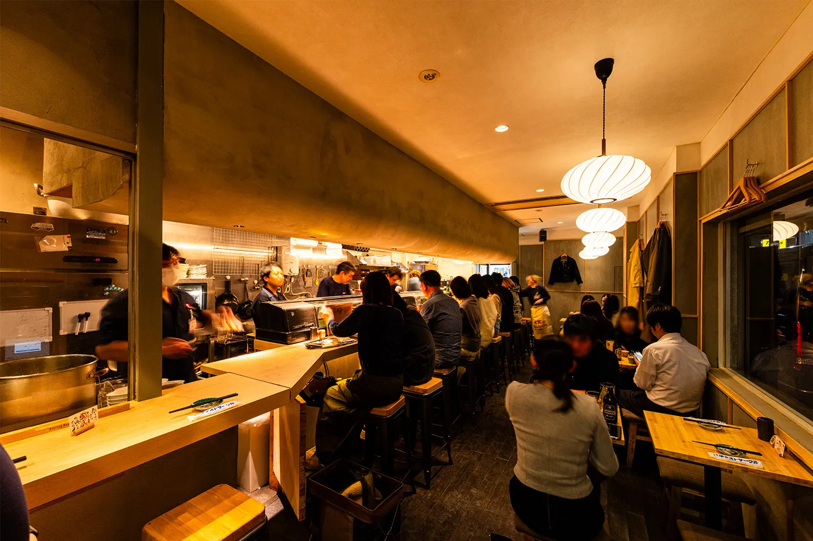

CONCEPTこだわり

焼鶏メジャー監修！
焼鳥酒場！
希少部位も取り扱う本格派の焼き鳥居酒屋です。
焼き鳥の他にも様々な鶏料理で新しい食体験へと導きます！
店内はノスタルジックでオシャレな雰囲気。
女性でも気軽に本格的な鶏料理をお楽しみいただけます。

ACCESS店舗情報
ヤキトリネクストサークル
- 住所
- 〒130-0022
東京都墨田区江東橋2-16-8 1F - 電話番号
- 03-3631-3880
- 営業時間
-
＜月～木＞
17:00～23:00
(L.O.22:00)＜金・祝前日＞
17:00～24:00
(L.O.23:00)＜土＞
13:00～24:00
(L.O.23:00)＜日・祝日＞
13:00～23:00
(L.O.22:00) - 定休日
- なし
- 席数
- 34席（全席禁煙）
貸切 20～50名様まで可 - お支払い
- カード可（VISA / Master / JCB）
PayPay可 ／ 電子マネー不可 - アクセス
- JR中央・総武線/錦糸町駅(南口)徒歩3分
東京メトロ半蔵門線/錦糸町駅徒歩4分